În stînga este slide-ul din curs, în dreapta aceeași figură, calculată în browser din aceleași date. Butonul ▶ modifică parametrul pas cu pas.
Importanța cozilor · Cozi groase și variația regulată · Estimatorul Hill · Funcția mean excess · Block maxima și distribuția GEV · Peaks over threshold și distribuția GPD · VaR și ES prin teoria valorilor extreme
Importanța cozilor
Zilele de crah față de distribuția Normală
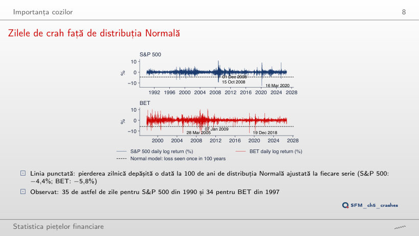
Răspuns
17 zile, sub −5,56%. Distribuția Normală așteaptă 0,0037 astfel de zile în 9 240 (probabilitatea 1/(10 000 × 252) pe zi). Nivelul coboară doar de la −4,44% la −5,56%: coada distribuției Normale scade atît de repede încît o perioadă de 100 de ori mai lungă mută pragul cu puțin peste un punct procentual. BET are 22 de zile sub nivelul său de 10 000 de ani (−7,25%). La T = 1 an, S&P 500 are 120 de zile sub −2,98%, față de 36,7 așteptate.
Cele mai mari pierderi zilnice în ipoteza distribuției Normale
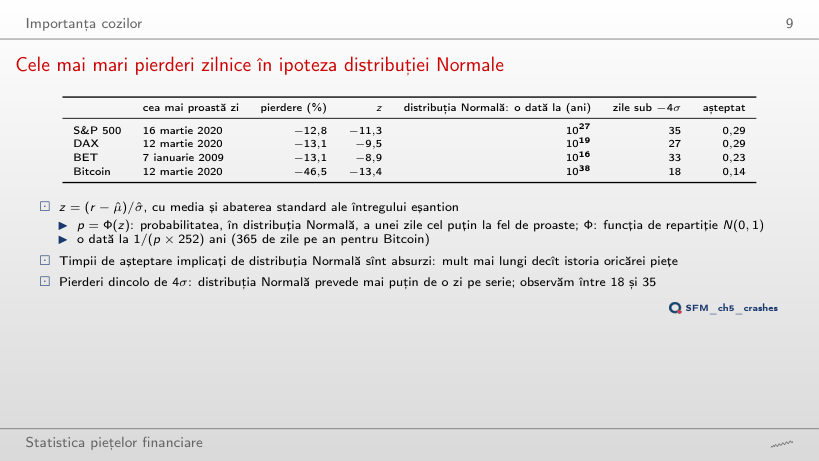
Exemplu lucrat: perioada de revenire în distribuția Normală
Răspuns
11 zile. Distribuția Normală așteaptă 9 240 × Φ(−6) = 9,1 × 10−6 zile, adică o asemenea zi o dată la 4 milioane de ani. Cele 35 de zile sub −4σ nu se împart după forma distribuției Normale (35 × Φ(−6)/Φ(−4) = 0,001): o treime dintre ele sînt dincolo de 6σ. DAX are 5 zile sub −6σ, BET 13, Bitcoin 2.
Cozi groase și variația regulată
Cozile de tip putere și cozile subțiri
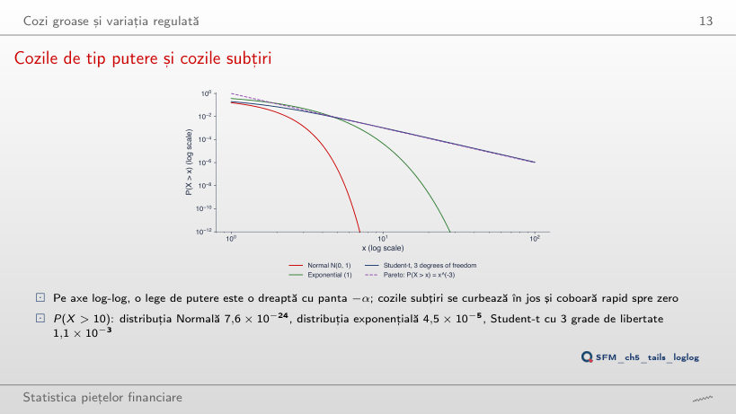
Răspuns
0,125 = 2−3: pentru o coadă cu variație regulată, P(X > tx)/P(X > x) → t−α, cu α = 3 pentru Student-t cu 3 grade de libertate. La x = 2 raportul este încă 0,201, la x = 20 este 0,126. Pentru distribuția exponențială raportul este e−x, 1,9 × 10−22 la x = 50, iar pentru distribuția Normală circa 10−1629: cozile subțiri dispar la fiecare dublare a pragului, coada de tip putere pierde mereu același factor 8.
Pierderi reale pe axe log-log
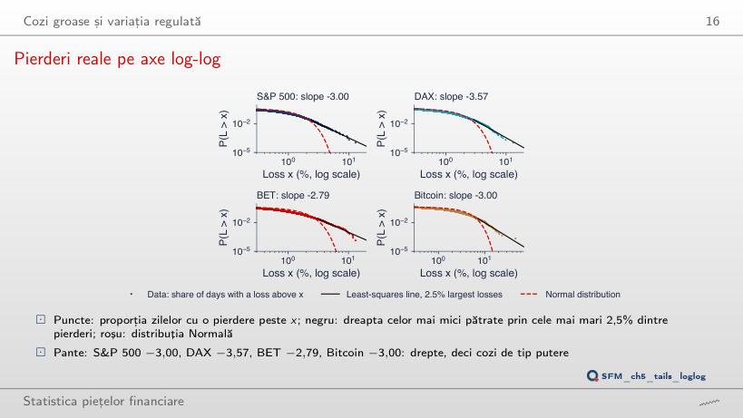
Răspuns
−2,50: dreapta intră în corpul distribuției, unde punctele se curbează și aplatizează dreapta. La 10%, estimatorul Hill scade și el, la 2,04. DAX: de la −3,57 la −2,65; BET: −2,17; Bitcoin: −2,31. La 0,5% (46 de pierderi pentru S&P 500), panta DAX este −4,39: puține puncte, variabilitate mare. Legea de putere descrie doar coada, iar estimarea depinde de cîte pierderi intră în ea.
Estimatorul Hill
Exemplu lucrat: Hill pe șase pierderi
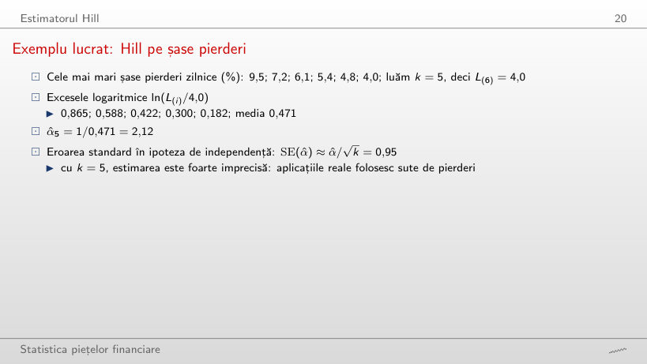
Cele mai mari pierderi zilnice și pragul X(k+1)
Exemplu lucrat: estimatorul Hill pe pierderile reale
Răspuns
4,15: rapoartele logaritmice sînt 0,477, 0,232, 0,178, 0,166 și 0,152, cu suma 1,205, deci ξ̂ = 0,241 și α̂ = 1/0,241 = 4,15. Patru dintre cele cinci pierderi (9,99% … 9,22%) sînt aproape una de alta, iar cel mai mare raport vine doar din 16 martie 2020. SE = 4,15/√5 = 1,86: intervalul i.i.d. de 95%, [0,51; 7,78], conține și estimarea de la k = 2,5% din n (2,97). Cu cinci pierderi, α̂ nu este precis.
Grafice Hill ale pierderilor zilnice
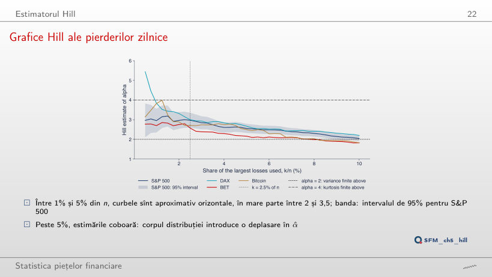
Răspuns
2,04, cu intervalul i.i.d. [1,91; 2,18], care nu mai conține 2,97. Cu k mare intră corpul distribuției, care deplasează estimarea în jos; intervalul se îngustează (SE = α̂/√k), deci un k mare dă o estimare precisă a unei mărimi deplasate. BET coboară la 1,82, sub 2, deși în zona plată este 2,57. Intervalul i.i.d. subestimează și incertitudinea: la k = 2,5%, SE i.i.d. a S&P 500 este 0,20, iar SE bootstrap pe blocuri de 20 de zile 0,30, de 1,5 ori mai mare, pentru că pierderile mari vin grupat; pentru DAX cele două coincid (0,20).
Estimări Hill pentru patru piețe
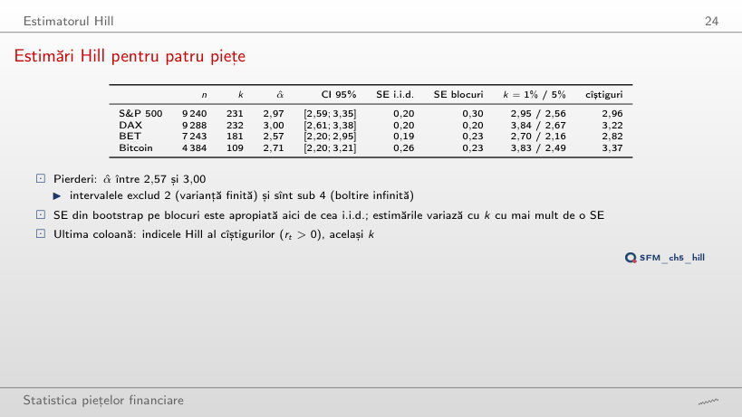
Răspuns
2,96: la S&P 500 cîștigurile au o coadă la fel de groasă ca pierderile. Cele mai mari cîștiguri sînt revenirile din aceleași crize: 10,96% (13 octombrie 2008), 10,25% (28 octombrie 2008), 9,09% (9 aprilie 2025), 8,97% (24 martie 2020). DAX (3,22), BET (2,82) și Bitcoin (3,37) au cîștiguri cu cozi mai subțiri decît pierderile. Tot la k = 2,5% din n, SE bloc a S&P 500 este 0,30, de 1,5 ori SE i.i.d. (0,20), pentru că pierderile mari vin grupate; pentru DAX cele două coincid (0,20).
Patru acțiuni de la Bursa de Valori București
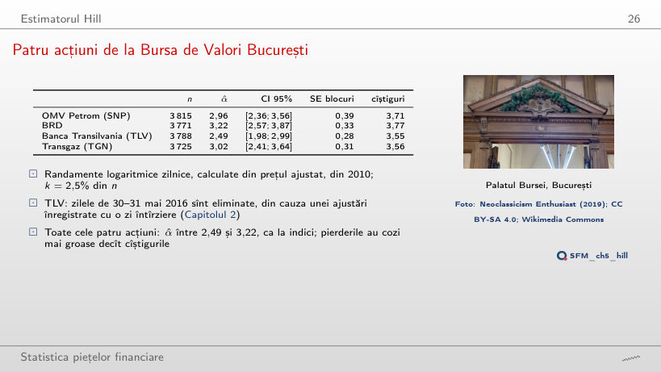
Răspuns
Toate patru: SNP 2,27, BRD 2,35, TLV 2,08, TGN 1,87. Cu 10% din n intră în calcul corpul distribuției, care deplasează estimarea în jos, ca la indici (S&P 500 2,04). Intervalele se îngustează (SE i.i.d. între 0,10 și 0,12), dar sînt intervale în jurul unei mărimi deplasate. La 1% din n, BRD are 3,86, cu intervalul [2,62; 5,11]: puține pierderi, variabilitate mare.
Grafice Hill pentru acțiunile BVB
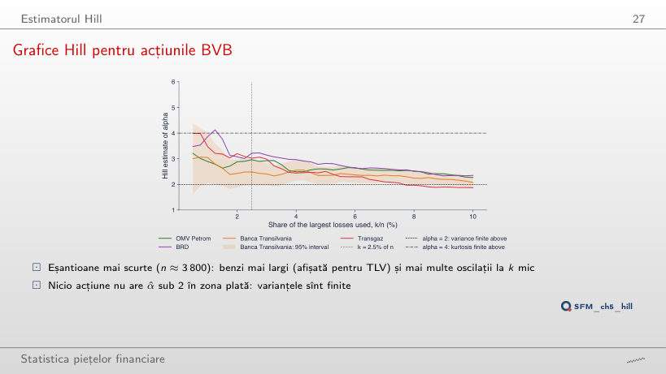
Răspuns
1,96, de la 2,07 la 4,03, aproape dublu. Lățimea intervalului este 2 × 1,96 α̂/√k: k scade de la 94 la 37 (√(94/37) = 1,59), iar α̂ crește de la 2,49 la 3,05. Eșantioanele BVB sînt de 2,5 ori mai scurte decît cele ale indicilor, deci același k/n dă mai puține pierderi și benzi mai largi; S&P 500 are la k = 1% intervalul [2,35; 3,56]. În zona plată (1%–5%), niciuna dintre cele patru acțiuni nu are α̂ sub 2.
Funcția mean excess
Mean excess empiric al pierderilor zilnice
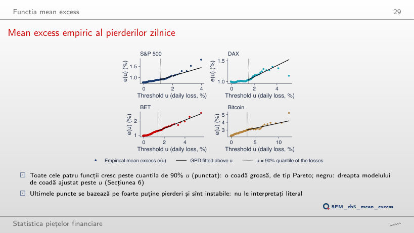
Răspuns
1,22%: excesul mediu crește cu pragul, cum cere o coadă groasă. Pentru o coadă Pareto, e(u) = u/(α − 1) crește liniar; pentru distribuția exponențială ar fi constant, pentru distribuția Normală ar scădea spre 0. BET: de la 1,30% la 1,79%. La cuantila de 98%, GPD se ajustează pe doar 185 de excese ale S&P 500 (față de 924 la 90%), iar ξ̂ urcă de la 0,158 la 0,255: estimări mai zgomotoase, cum arată și ultimele puncte ale graficului.
Interpretarea graficului mean excess
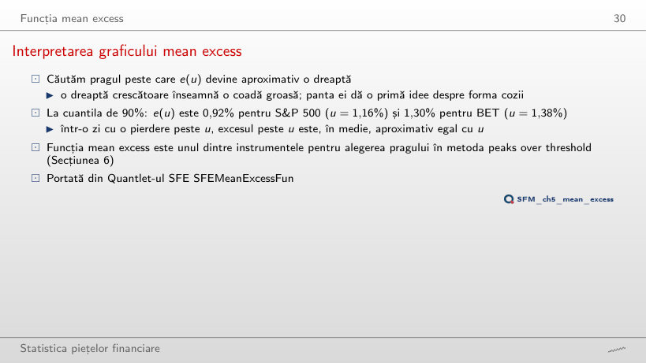
Răspuns
0,48: e(u) crește, la 1,22%, dar mai încet decît pragul. Pentru o coadă Pareto, e(u)/u = 1/(α − 1): raportul 0,48 corespunde lui α = 1 + 1/0,48 = 3,1, aproape de estimarea Hill (2,97); raportul 0,79 de la 90% ar da α = 2,3, pentru că acolo contează încă pierderile din corpul distribuției. BET: de la 0,95 la 0,52.
Block maxima și distribuția GEV
Cele trei legi ale valorilor extreme
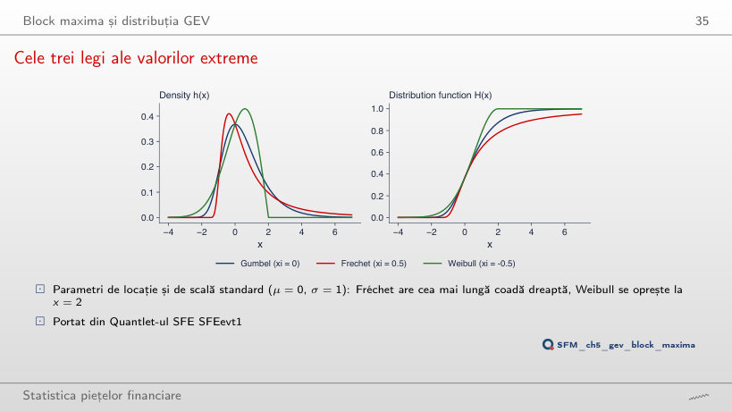
Răspuns
La x = 4: capătul superior este μ − σ/ξ = 0 − 1/(−0,25). Cînd |ξ| scade spre 0, capătul se depărtează și distribuția Weibull se apropie de Gumbel; distribuția Fréchet cu ξ = 0,25 are tail index-ul 1/ξ = 4, iar P(X > 5) scade de la 0,078 (ξ = 0,5) la 0,038, față de 0,0067 pentru Gumbel. Semnul lui ξ decide tipul cozii, mărimea lui decide cît de groasă sau cît de scurtă este.
Teorema într-o simulare
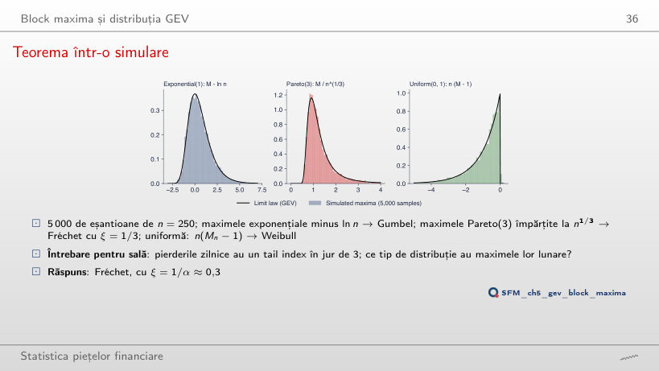
Răspuns
0,837 în simulare; exact, E[M2] − ln 2 = 1 + 1/2 − 0,693 = 0,807. În general E[Mn] = 1 + 1/2 + … + 1/n, iar diferența față de ln n tinde la 0,577: convergența către Gumbel este lentă, de ordinul 1/n. Pentru distribuția uniformă, media lui n(M − 1) este exact −n/(n + 1): −0,667 la n = 2, aproape −1 la n = 250. La n = 21 (o lună de tranzacționare) mediile sînt deja 0,593, 1,373 și −0,957. Valorile n ≠ 250 sînt rulări suplimentare ale codului din curs, cu aceeași sămînță.
Ajustări GEV la maximele lunare
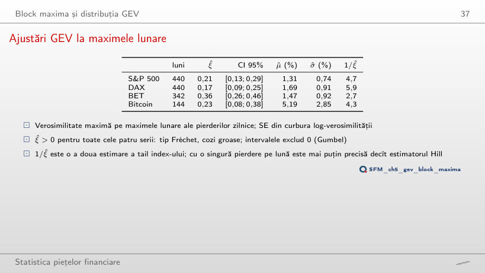
Răspuns
0,05, cu intervalul [0,03; 0,07]. Un bloc de 5 zile este departe de limita teoremei Fisher–Tippett–Gnedenko: 7% din maximele săptămînale ale BET sînt cîștiguri (nicio zi de pierdere în săptămînă), iar ajustarea urmează corpul distribuției. Cu blocuri trimestriale, ξ̂ = 0,42; cu blocuri anuale rămîn doar 28 de maxime, iar intervalul [−0,19; 0,65] conține și 0. Blocul trebuie să fie destul de lung pentru teoremă și destul de scurt pentru a lăsa multe maxime.
Calitatea ajustării GEV: grafice PP și QQ
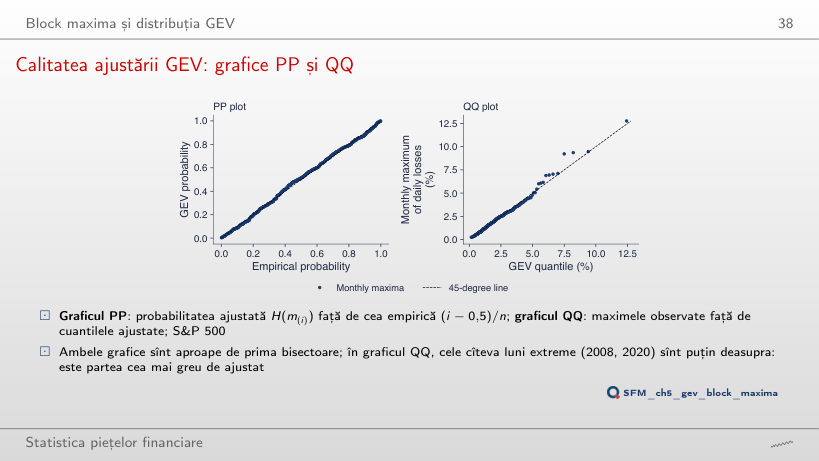
Răspuns
6,99%: o coadă exponențială pune cea mai extremă lună la jumătate din valoarea observată, iar punctele de sus ale graficului QQ urcă mult deasupra bisectoarei. Nivelul de 10 ani scade de la 7,4% (GEV) la 5,3% (Gumbel), un nivel depășit în 12 dintre cele 440 de luni, adică de peste trei ori mai des decît o dată la 10 ani. Ajustarea Gumbel este o rulare suplimentară, pentru comparație; intervalul de 95% al lui ξ̂ din curs, [0,13; 0,29], exclude 0. Pentru BET (ξ̂ = 0,36), GEV pune cea mai mare lună la 26,1%, față de 13,1% observat: coada ajustată este mai groasă decît datele.
Return levels (niveluri de revenire)
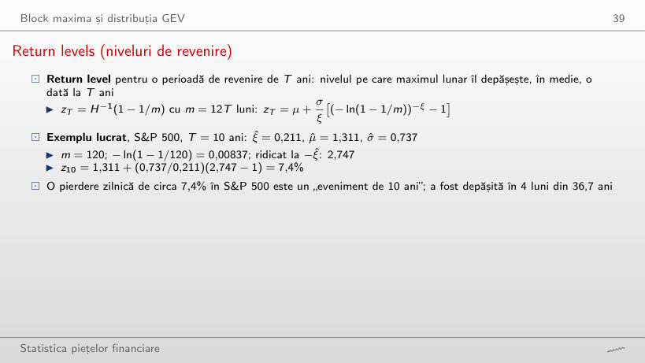
Exemplu lucrat: return level din GEV
Răspuns
În 31 de luni, față de 440/12 = 36,7 așteptate. „O dată pe an” înseamnă în medie o lună din 12, adică circa 37 de luni în 36,7 ani. La T = 1 an: −ln(1 − 1/12) = 0,0870, ridicat la −0,211 dă 1,675, iar z = 1,311 + 3,486 × 0,675 = 3,66%. Pentru DAX: 36 de luni peste 4,45%, cît se așteaptă.
Graficul return levels
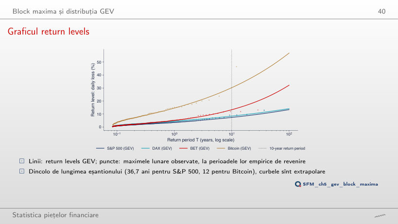
Răspuns
32,2%, de aproape 2,5 ori cea mai mare pierdere observată. Cu ξ̂ = 0,36, return level crește aproximativ ca Tξ: fiecare înmulțire a lui T cu 10 mărește nivelul cu un factor de circa 2,4. Este o extrapolare la de 3,5 ori lungimea eșantionului; deja la 10 ani, intervalul bootstrap este [10,3%; 17,5%]. S&P 500, cu ξ̂ = 0,21: 13,4% la 100 de ani, aproape de cea mai mare pierdere observată (12,8%).
Return levels ale pierderilor zilnice: 1, 10 și 50 de ani
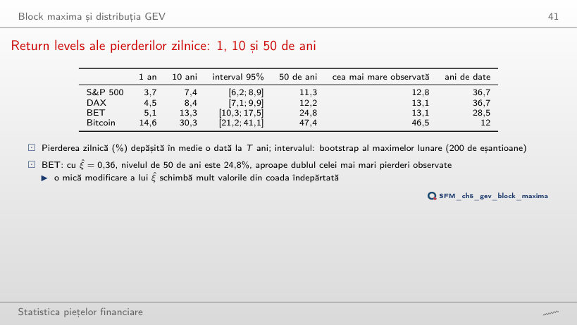
Răspuns
2,46: intervalul este [20,8%; 51,4%], în jurul unui nivel de 32,2%. Cu cît T este mai mare, cu atît nivelul depinde mai mult de ξ, iar incertitudinea lui ξ̂ (intervalul [0,26; 0,46]) se amplifică. Pentru Bitcoin, la 100 de ani: [31,1%; 94,4%], cu 12 ani de date. S&P 500 la 100 de ani: [9,9%; 18,3%].
Peaks over threshold și distribuția GPD
Densități și cozi GPD
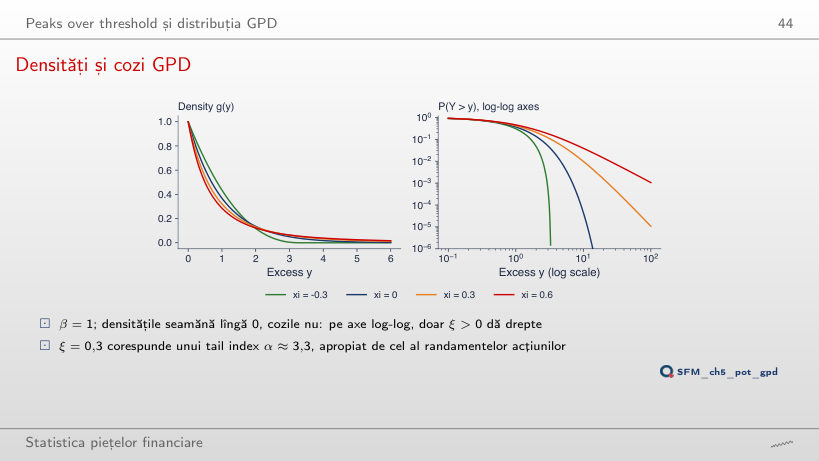
Răspuns
De la ξ = 1/2: varianța există doar pentru α = 1/ξ > 2. Media excesului, β/(1 − ξ), există pînă la ξ = 1. Pentru ξ = 0,5, P(Y > 10) = 0,028 (β = 1), față de 0,0098 pentru ξ = 0,3 și 4,5 × 10−5 pentru ξ = 0. Ajustările GPD din curs au ξ̂ între 0,12 și 0,22 pentru cele patru serii: cozi groase, cu varianță finită.
Stabilitatea parametrilor
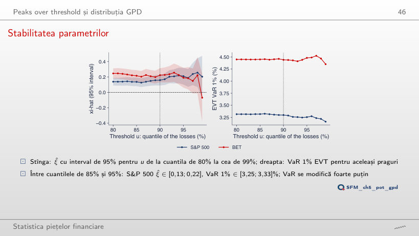
Răspuns
ξ̂ = 0,203, cu un interval de 95% de la −0,07 la 0,47 (SE 0,138, de patru ori mai mare decît la 90%), dar VaR 1% rămîne 3,16%. VaR 1% este în interiorul datelor (92 de zile dincolo de el în eșantion), deci depinde puțin de forma cozii; ξ̂ depinde mult de prag. Între cuantilele de 85% și 95%: ξ̂ între 0,13 și 0,22, VaR 1% între 3,25% și 3,33%. BET la 99%: ξ̂ = −0,07, VaR 1% 4,35%.
Ajustări GPD peste cuantila de 90%
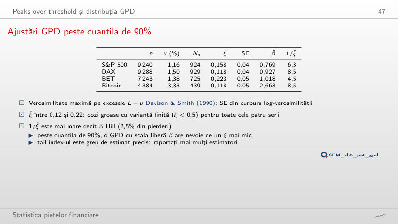
Exemplu lucrat: tail index-ul α = 1/ξ
Răspuns
Circa 19: ξ̂ scade la 0,053, cu SE 0,075, iar intervalul de 95% [−0,09; 0,20] conține 0. Inversul unei estimări apropiate de 0 este instabil: din același interval, α poate fi oriunde peste 5,0. La pragul de 80%, DAX are 1/ξ̂ = 15,6; S&P 500 coboară de la 6,3 (90%) la 3,9 (98%). Estimarea Hill a DAX (k = 2,5% din n) este 3,00.
Calitatea ajustării GPD: grafice PP și QQ
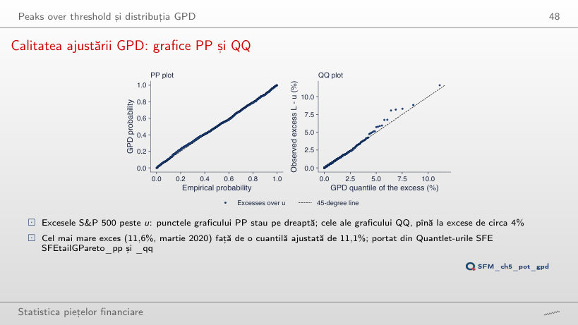
Răspuns
Trece sub bisectoare: excesul este 10,24% (pragul a urcat la 2,52%), iar cuantila ajustată 12,65%, pentru că ξ̂ crește la 0,255 pe doar 185 de excese. Ultimul punct al graficului QQ depinde mult de ξ̂, deci de prag. Pentru BET, GPD de la cuantila de 90% pune cel mai mare exces la 18,56%, față de 11,74% observat: coada ajustată este mai groasă decît cele mai mari pierderi din eșantion.
Cozile ajustate
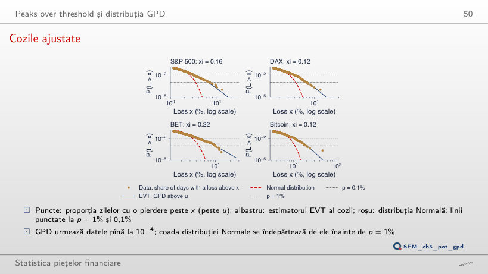
Răspuns
EVT 10,79%, Normal 4,18%, de 2,6 ori mai puțin. La p = 1%, raportul este 1,27 (3,30% față de 2,60%). Eșantionul de 9 240 de zile conține în medie 0,9 zile dincolo de VaR 0,01%, deci cuantila istorică (10,21%) este doar o interpolare între cele mai mari două pierderi. Cuantila Hill dă 15,02%: departe în coadă, estimatorii diferă mult. BET: EVT 18,10%, Hill 26,16%, istoric 12,24%.
Timpii de așteptare ai celor mai mari pierderi zilnice: distribuția Normală și EVT
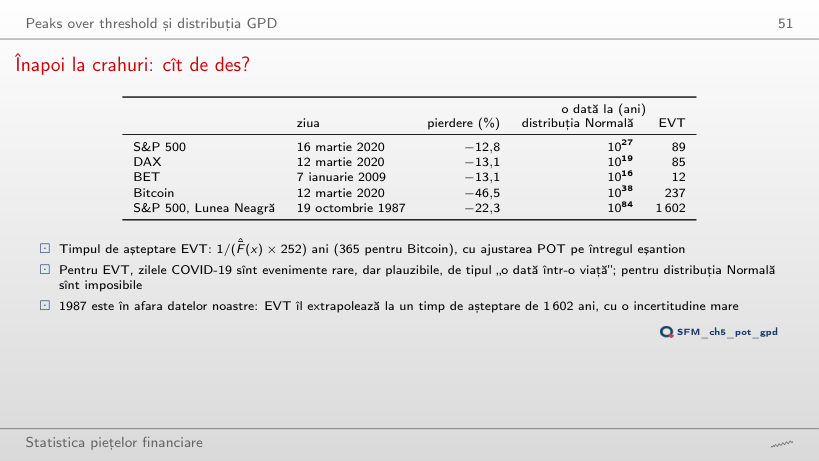
Răspuns
Circa 306 ani: ξ̂ al S&P 500 crește de la 0,158 la 0,255, iar o coadă mai groasă face evenimentul de 22% mult mai puțin rar. La pragul de 80% perioada este 2 770 de ani. Cu cît pierderea este mai departe de date, cu atît perioada depinde mai mult de prag. DAX merge în sens invers: 85 de ani la 90%, 187 la 98%, pentru că ξ̂ scade la 0,053. Distribuția Normală rămîne la 1084 ani pentru orice prag.
VaR și ES prin teoria valorilor extreme
Exemplu lucrat: S&P 500, pas cu pas
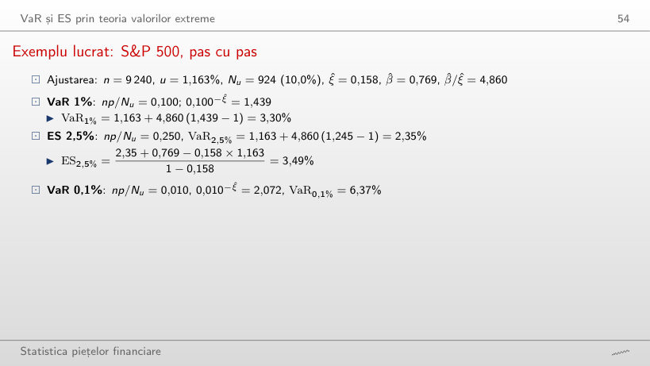
Exemplu lucrat: VaR și ES din GPD
Răspuns
1,25: ES 0,01% = 13,52%, VaR 0,01% = 10,79%. Departe în coadă, ES/VaR tinde la 1/(1 − ξ̂) = 1/(1 − 0,158) = 1,19: excesul peste VaR este tot GPD cu același ξ, iar media lui crește proporțional cu VaR. La 2,5%, raportul este mai mare pentru că termenul (β̂ − ξ̂u)/(1 − ξ̂) = 0,695 contează mult față de un VaR mic.
VaR 1% și ES 2,5%: trei metode
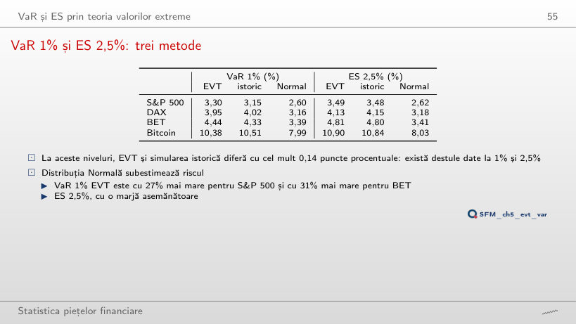
Răspuns
Distribuția Normală: 1,83%, față de 1,73% EVT și 1,72% istoric; la fel pentru DAX, BET și Bitcoin. Pierderile cu cozi groase sînt și mai concentrate în jurul lui 0, așa că, aproape de corpul distribuției, cuantila empirică este sub cea Normală cu aceeași abatere standard. De la 2,5% (2,35% EVT, 2,19% Normal) ordinea se inversează, iar diferența crește spre coadă.
VaR la nivelul de 0,1%
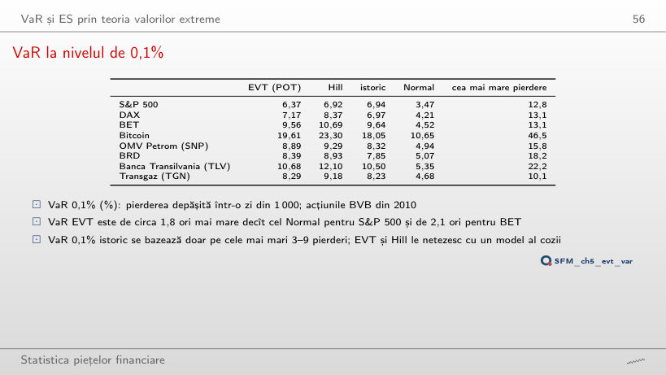
Răspuns
De 3,3 ori: 18,10% față de 5,45%. Cuantila Normală crește foarte încet (z trece de la 3,09 la 3,72), cea EVT ca o putere a lui 1/p. La 0,01%, eșantionul BET de 7 243 de zile conține în medie 0,7 zile dincolo de VaR, iar cea mai mare pierdere observată este 13,1%: valoarea EVT este o extrapolare. Hill dă 26,16%.
În afara eșantionului: estimare pînă în 2019, test 2020–2026
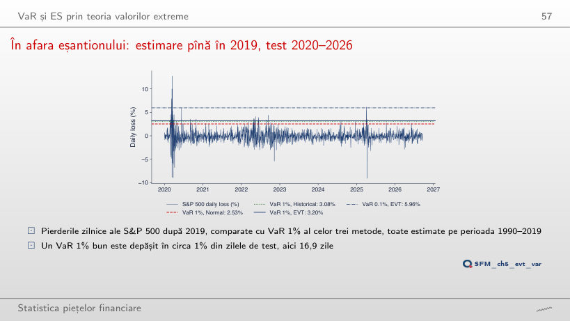
Răspuns
De 13 ori, sub valoarea așteptată; VaR EVT de 4 ori, cel istoric de 5 ori. Perioada de test a fost mai liniștită pentru BET decît perioada de estimare 1997–2019. Un VaR estimat o singură dată nu urmărește volatilitatea: depășirile sînt prea multe după 2020 la S&P 500 (EVT 25, istoric 26) și prea puține la BET. La VaR 0,1%, distribuția Normală rămîne depășită prea des pentru toate cele patru serii: S&P 500 23 de zile față de 1,7, BET 4 față de 1,7, Bitcoin 8 față de 2,5.
Numărarea depășirilor
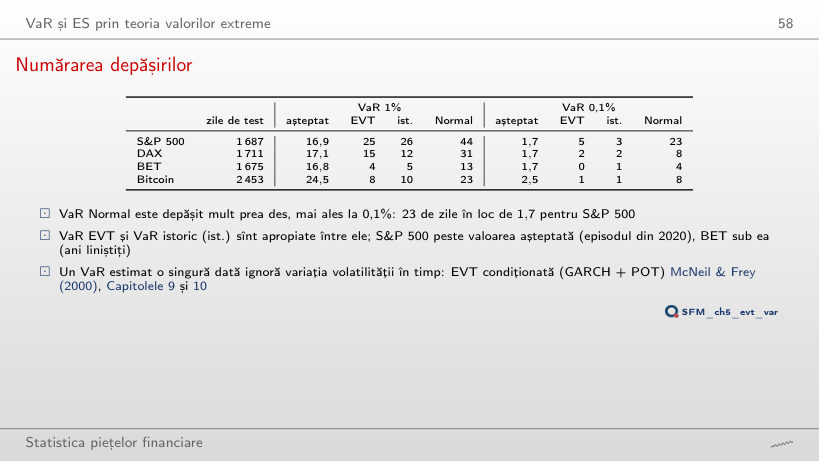
Exemplu lucrat: testul Kupiec
Răspuns
Respinge acoperirea corectă: LR = 14,14, valoarea p 0,0002. Testul este bilateral: prea puține depășiri înseamnă un VaR prea mare pentru perioada testată, care a fost mai liniștită pentru BET decît anii 1997–2019. VaR Normal al BET, cu 13 depășiri, nu este respins (valoarea p 0,34), deși la 0,1% are 4 depășiri față de 1,7. La S&P 500, EVT (25 de depășiri) nu este respins (valoarea p 0,063), simularea istorică (26) este respinsă (0,038), iar distribuția Normală (44) are valoarea p 3 × 10−8.
Pierderi zilnice L = −r, în %, din randamentele logaritmice: S&P 500 și DAX din ianuarie 1990, BET din septembrie 1997, Bitcoin din septembrie 2014 (7 zile pe săptămînă), pînă la 18 septembrie 2026; OMV Petrom, BRD, Banca Transilvania și Transgaz din 2010, din prețul ajustat. Prețuri de închidere EODHD. Ajustările GEV, intervalele bootstrap și maximele simulate sînt cele din curs (aceleași reguli și aceeași sămînță a generatorului); estimările Hill, GPD, VaR și ES sînt recalculate în browser din aceleași pierderi.